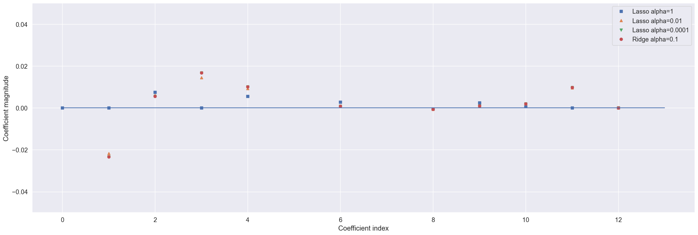

Cargue de Datos para el Modelo Regresión Lasso#
import numpy as np
import pandas as pd
import matplotlib.pyplot as plt
import seaborn as sns
import warnings
warnings.filterwarnings('ignore')
import plotly.express as px
import plotly.graph_objects as go
from sklearn.model_selection import train_test_split
from sklearn.linear_model import LinearRegression
from sklearn.metrics import mean_squared_error, r2_score
import os
for dirname, _, filenames in os.walk('/kaggle/input'):
for filename in filenames:
print(os.path.join(dirname, filename))
ruta = r'/Users/instructorzamora/Documents/3_Maestria_Estadistica_UNINORTE/3_Tercer_Semestre/Machine_Learning/tornados.csv.zip'
df = pd.read_csv(ruta)
df.isnull().sum()
---------------------------------------------------------------------------
FileNotFoundError Traceback (most recent call last)
Cell In[2], line 2
1 ruta = r'/Users/instructorzamora/Documents/3_Maestria_Estadistica_UNINORTE/3_Tercer_Semestre/Machine_Learning/tornados.csv.zip'
----> 2 df = pd.read_csv(ruta)
3 df.isnull().sum()
File ~\miniconda3\envs\ml_venv\lib\site-packages\pandas\io\parsers\readers.py:948, in read_csv(filepath_or_buffer, sep, delimiter, header, names, index_col, usecols, dtype, engine, converters, true_values, false_values, skipinitialspace, skiprows, skipfooter, nrows, na_values, keep_default_na, na_filter, verbose, skip_blank_lines, parse_dates, infer_datetime_format, keep_date_col, date_parser, date_format, dayfirst, cache_dates, iterator, chunksize, compression, thousands, decimal, lineterminator, quotechar, quoting, doublequote, escapechar, comment, encoding, encoding_errors, dialect, on_bad_lines, delim_whitespace, low_memory, memory_map, float_precision, storage_options, dtype_backend)
935 kwds_defaults = _refine_defaults_read(
936 dialect,
937 delimiter,
(...)
944 dtype_backend=dtype_backend,
945 )
946 kwds.update(kwds_defaults)
--> 948 return _read(filepath_or_buffer, kwds)
File ~\miniconda3\envs\ml_venv\lib\site-packages\pandas\io\parsers\readers.py:611, in _read(filepath_or_buffer, kwds)
608 _validate_names(kwds.get("names", None))
610 # Create the parser.
--> 611 parser = TextFileReader(filepath_or_buffer, **kwds)
613 if chunksize or iterator:
614 return parser
File ~\miniconda3\envs\ml_venv\lib\site-packages\pandas\io\parsers\readers.py:1448, in TextFileReader.__init__(self, f, engine, **kwds)
1445 self.options["has_index_names"] = kwds["has_index_names"]
1447 self.handles: IOHandles | None = None
-> 1448 self._engine = self._make_engine(f, self.engine)
File ~\miniconda3\envs\ml_venv\lib\site-packages\pandas\io\parsers\readers.py:1705, in TextFileReader._make_engine(self, f, engine)
1703 if "b" not in mode:
1704 mode += "b"
-> 1705 self.handles = get_handle(
1706 f,
1707 mode,
1708 encoding=self.options.get("encoding", None),
1709 compression=self.options.get("compression", None),
1710 memory_map=self.options.get("memory_map", False),
1711 is_text=is_text,
1712 errors=self.options.get("encoding_errors", "strict"),
1713 storage_options=self.options.get("storage_options", None),
1714 )
1715 assert self.handles is not None
1716 f = self.handles.handle
File ~\miniconda3\envs\ml_venv\lib\site-packages\pandas\io\common.py:784, in get_handle(path_or_buf, mode, encoding, compression, memory_map, is_text, errors, storage_options)
779 # ZIP Compression
780 elif compression == "zip":
781 # error: Argument 1 to "_BytesZipFile" has incompatible type
782 # "Union[str, BaseBuffer]"; expected "Union[Union[str, PathLike[str]],
783 # ReadBuffer[bytes], WriteBuffer[bytes]]"
--> 784 handle = _BytesZipFile(
785 handle, ioargs.mode, **compression_args # type: ignore[arg-type]
786 )
787 if handle.buffer.mode == "r":
788 handles.append(handle)
File ~\miniconda3\envs\ml_venv\lib\site-packages\pandas\io\common.py:1027, in _BytesZipFile.__init__(self, file, mode, archive_name, **kwargs)
1024 kwargs.setdefault("compression", zipfile.ZIP_DEFLATED)
1025 # error: Incompatible types in assignment (expression has type "ZipFile",
1026 # base class "_BufferedWriter" defined the type as "BytesIO")
-> 1027 self.buffer: zipfile.ZipFile = zipfile.ZipFile( # type: ignore[assignment]
1028 file, mode, **kwargs
1029 )
File ~\miniconda3\envs\ml_venv\lib\zipfile.py:1250, in ZipFile.__init__(self, file, mode, compression, allowZip64, compresslevel, strict_timestamps)
1248 while True:
1249 try:
-> 1250 self.fp = io.open(file, filemode)
1251 except OSError:
1252 if filemode in modeDict:
FileNotFoundError: [Errno 2] No such file or directory: '/Users/instructorzamora/Documents/3_Maestria_Estadistica_UNINORTE/3_Tercer_Semestre/Machine_Learning/tornados.csv.zip'
df['loss'] = df['loss'].replace(0, pd.NA)
df['loss'] = df['loss'].interpolate(method='linear')
# Imputar los valores NaN con la media de la columna 'mag'
df['mag'] = df['mag'].fillna(df['mag'].mean())
df.shape
(68693, 27)
Implementación Regresión Lasso L1#
import numpy as np
# Definir X y y (asegúrate de que ya tienes estas variables previamente definidas)
X = df[['mag', 'slat', 'slon', 'elat', 'elon', 'len', 'wid','fat','f1', 'f2', 'f3', 'f4','loss']]
y = df['inj']
# Dividir los datos en conjunto de entrenamiento y prueba (80% entrenamiento, 20% prueba)
X_train, X_test, y_train, y_test = train_test_split(X, y, test_size=0.2, random_state=42)
# Crear y ajustar el modelo de regresión lineal
lr = LinearRegression().fit(X_train, y_train)
from sklearn.linear_model import Lasso
lasso = Lasso().fit(X_train, y_train)
print("Training set score: {:.2f}".format(lasso.score(X_train, y_train)))
print("Test set score: {:.2f}".format(lasso.score(X_test, y_test)))
print("Number of features used: {}".format(np.sum(lasso.coef_ != 0)))
# Ver los coeficientes de cada variable en el modelo
coeficientes = pd.Series(lasso.coef_, index=X_train.columns)
# Ver el intercepto del modelo
intercepto = lasso.intercept_
# Mostrar los coeficientes y el intercepto
print("Coeficientes del modelo Lasso:")
print(coeficientes)
print("\nIntercepto del modelo Lasso:")
print(intercepto)
Training set score: 0.59
Test set score: 0.65
Number of features used: 9
Coeficientes del modelo Lasso:
mag 0.000000e+00
slat -0.000000e+00
slon 7.539867e-03
elat -0.000000e+00
elon 5.577088e-03
len 1.695515e-01
wid 2.760373e-03
fat 7.099604e+00
f1 -4.412743e-04
f2 2.441023e-03
f3 6.501204e-04
f4 0.000000e+00
loss 1.289027e-07
dtype: float64
Intercepto del modelo Lasso:
0.7162750490559678
lasso001 = Lasso(alpha=0.01, max_iter=100000).fit(X_train, y_train)
print("Training set score: {:.2f}".format(lasso001.score(X_train, y_train)))
print("Test set score: {:.2f}".format(lasso001.score(X_test, y_test)))
print("Number of features used: {}".format(np.sum(lasso001.coef_ != 0)))
# Ver los coeficientes de cada variable en el modelo
coeficientes = pd.Series(lasso001.coef_, index=X_train.columns)
# Ver el intercepto del modelo
intercepto = lasso001.intercept_
# Mostrar los coeficientes y el intercepto
print("Coeficientes del modelo lasso001:")
print(coeficientes)
print("\nIntercepto del modelo lasso001:")
print(intercepto)
Training set score: 0.59
Test set score: 0.66
Number of features used: 13
Coeficientes del modelo lasso001:
mag 1.022849e+00
slat -2.163464e-02
slon 6.103477e-03
elat 1.443582e-02
elon 9.277690e-03
len 1.329007e-01
wid 9.106679e-04
fat 7.640309e+00
f1 -6.663740e-04
f2 9.927145e-04
f3 1.946659e-03
f4 9.585565e-03
loss 1.143144e-07
dtype: float64
Intercepto del modelo lasso001:
0.8033124394702692
lasso00001 = Lasso(alpha=0.0001, max_iter=100000).fit(X_train, y_train)
print("Training set score: {:.2f}".format(lasso00001.score(X_train, y_train)))
print("Test set score: {:.2f}".format(lasso00001.score(X_test, y_test)))
print("Number of features used: {}".format(np.sum(lasso00001.coef_ != 0)))
# Ver los coeficientes de cada variable en el modelo
coeficientes = pd.Series(lasso00001.coef_, index=X_train.columns)
# Ver el intercepto del modelo
intercepto = lasso00001.intercept_
# Mostrar los coeficientes y el intercepto
print("Coeficientes del modelo lasso00001:")
print(coeficientes)
print("\nIntercepto del modelo lasso00001:")
print(intercepto)
Training set score: 0.59
Test set score: 0.66
Number of features used: 13
Coeficientes del modelo lasso00001:
mag 1.039166e+00
slat -2.339887e-02
slon 5.486804e-03
elat 1.674618e-02
elon 1.015659e-02
len 1.322325e-01
wid 8.844667e-04
fat 7.645438e+00
f1 -6.756783e-04
f2 9.715061e-04
f3 1.961393e-03
f4 9.774258e-03
loss 1.141645e-07
dtype: float64
Intercepto del modelo lasso00001:
0.8018051980000763
import matplotlib.pyplot as plt
import seaborn as sns
import seaborn as sns
sns.set(font_scale=1.2)
# Establecer el tamaño de la fuente
sns.set(font_scale=1.2)
# Crear la figura
plt.figure(figsize=(25, 8))
# Graficar los coeficientes para diferentes modelos
plt.plot(lasso.coef_, 's', label="Lasso alpha=1") # Tamaño de marcador aumentado
plt.plot(lasso001.coef_, '^', label="Lasso alpha=0.01")
plt.plot(lasso00001.coef_, 'v', label="Lasso alpha=0.0001")
plt.plot(ridge01.coef_, 'o', label="Ridge alpha=0.1")
# Ajustar las etiquetas y las líneas de referencia
plt.xlabel("Coefficient index")
plt.ylabel("Coefficient magnitude")
# Línea horizontal en y = 0 para visualización
plt.hlines(0, 0, len(lr.coef_))
# Ajustar el límite del eje Y
plt.ylim(-0e3, 0e3) # Ajusta según el rango de los coeficientes (puedes modificar esto)
# Cambiar el eje Y a una escala logarítmica si la disparidad es muy grande
# plt.yscale('symlog') # Descomenta esta línea si quieres usar una escala logarítmica
# Agregar la leyenda
plt.legend()
# Mostrar el gráfico
plt.show()
